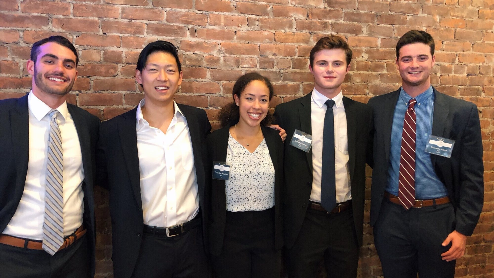

Finance
A solid grounding in finance concepts and tools, plus the resources to land the opportunities members want.
What we do
The Finance Initiative aims to give members a solid understanding of finance concepts and tools useful in their future professional careers. It also provides resources to help members land their desired opportunities.
The initiative holds weekly meetings. These meetings vary from discussion sessions to industry overviews, to interview preparation sessions. Discussion sessions cover recent financial events, as familiarity with the news is essential for success in industry. Industry overviews are particularly helpful for new members, as it allows members to learn about the differences between roles. Interview preparation sessions are also held for specific roles prior to typical recruiting timelines.
The initiative also hosts a series of social events aiming to provide a community in addition to professional development. Members participate in mock trading and evaluate public equity opportunities to gain practical investing experience.
What members get out of it
- Genuine experience in both fundamental and quantitative finance, to prepare members for successful careers.
- Weekly sessions that rotate between current-events discussion, industry overviews, and role-specific interview preparation timed to recruiting cycles.
- Resources for members to connect with one another, so that every member finds the opportunities most exciting to them.
Finance initiative leads
Questions, partnerships, or just curious?
We want to hear from you. Reach the executive board directly, or follow along with what the club is up to this semester.